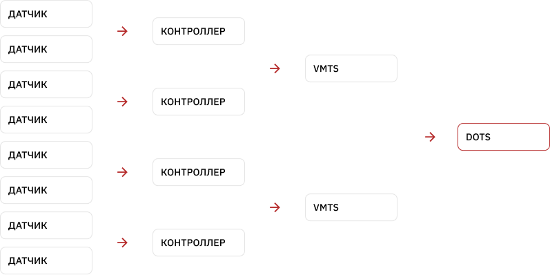

Система контроля бункеровки

Система контроля бункеровки — решение для флота, с помощью которого предотвращаются хищение горюче-смазочных материалов и искажение данных о поставке топлива на судно.
Инструмент используется на всех типах судов: танкерах, сухогрузах, тягачах, бункеровозах. Он собирает достоверные данные о том, как поставляется топливо на судно, в каком количестве, и позволяет сократить топливные издержки.
Какие данные о топливе вы будете получать?
Как работает система бункеровки?
Что обеспечивает система контроля бункеровки?
Как контроль бункеровки поможет сократить расходы на топливо?
В режиме реального времени вы будете получать данные по комплексу параметров и в соответствии с их значениями регулировать процессы передачи топлива. Контролируйте длительность бункеровки, местоположение, технические характеристики топлива (плотность, температура), интенсивность, массу и объем. Сама система проста в использовании, а датчики устойчивы к агрессивной внешней среде.
Полученные данные формируются в отчеты за период, их можно изучить и корректировать процессы покупки топлива в будущем.
3-6 месяцев — столько времени вам понадобится, чтобы полностью окупить систему контроля бункеровки.
Контролировать процесс бункеровки можно уже сейчас с помощью программы рассрочки от компании «Технодар».